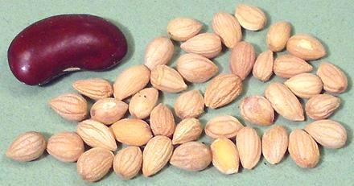
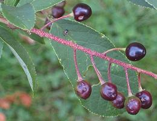

Mahaleb

[Bird Cherry; Mahlab, Mahleb (Mid East, Anatolia, Armenia); Mahlepi
(Greek); St Lucie Cherry, Mahaleb Cherry, Prunus mahaleb]
This cherry tree is native from central and southern Europe east to
Pakistan and Kyrgystan, and south to Morocco and Lebanon. It produces
small red cherries that are thin fleshed and bitter, eaten mainly by
birds. The cherry pits are broken open to release the kernel, which is
used as a spice for holiday sweets and cakes, particularly in Greece,
Turkey, Armenia, Cyprus, Lebanon. Syria and Iraq. It is also used to
flavor Nabulsi cheese.
It is described as tasting like a combination of cherry and bitter
almond. Myself I don't detect much cherry, but it has a moderately
bitter aromatic resin taste. The specimen photo shows seed kernels
0.2 inch (5 mm) long purchased from a market in Los Angeles. It
is more available in powdered form, but that must be fresh as it
degrades rapidly. The seed kernels also must not be stored long,
as they become rancid within a year or so.
More on Spices. |
More on Roses - Stone Fruit.

The photo to the left shows ripe mahaleb cherries on the tree.
Photo by Rasbak distributed under
GNU Free Documentation License v1.2.
po_mahaleb 081109 - www.clovegarden.com
©Andrew Grygus - agryg@clovegarden.com - Photos on this
page not otherwise credited are © cg1 -
Linking to and non-commercial use of this page permitted